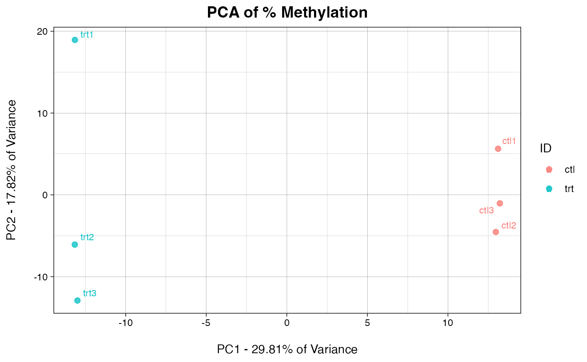
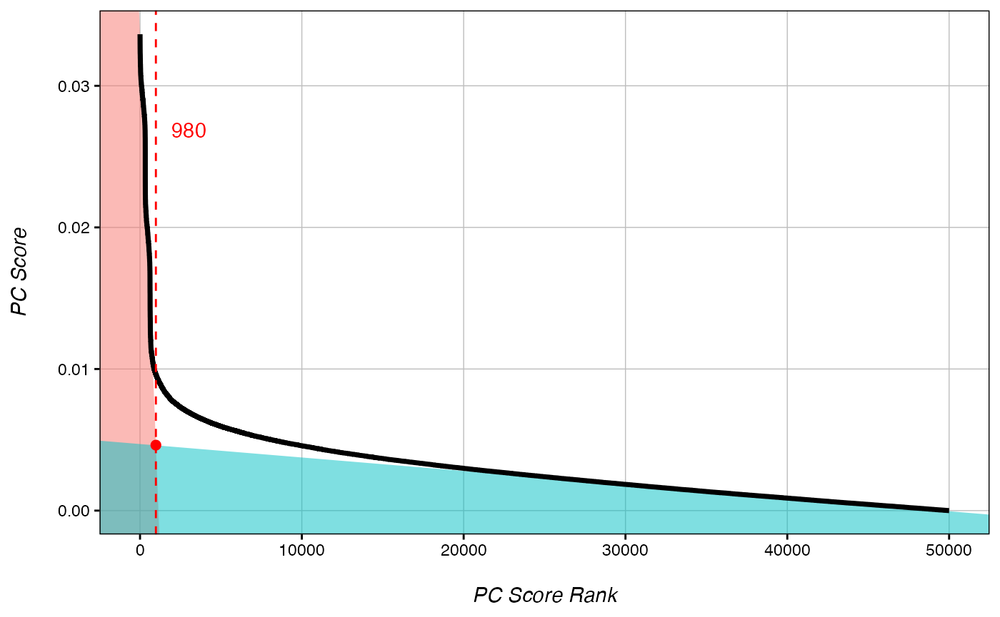
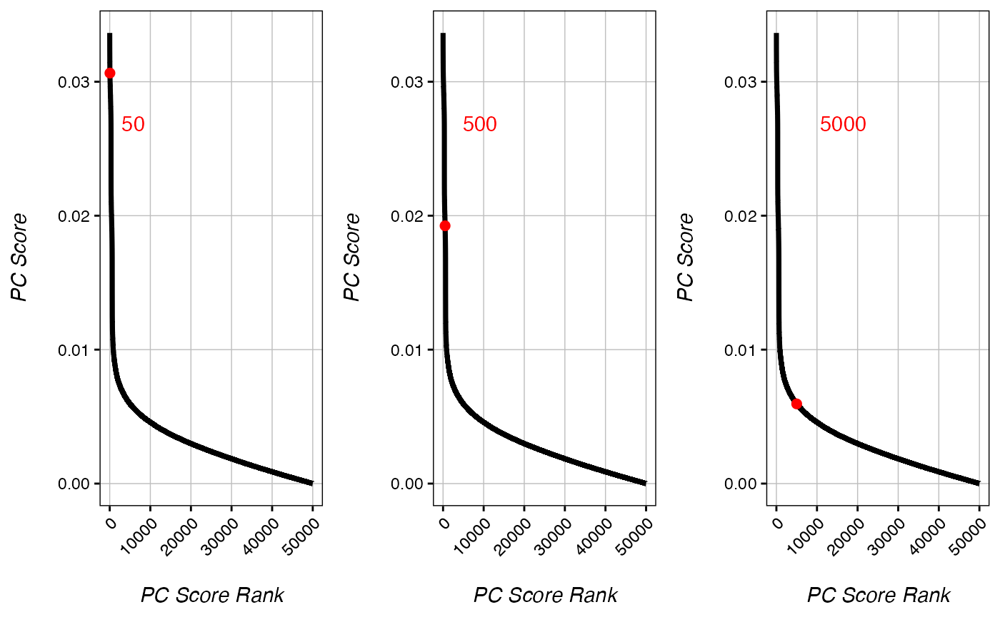
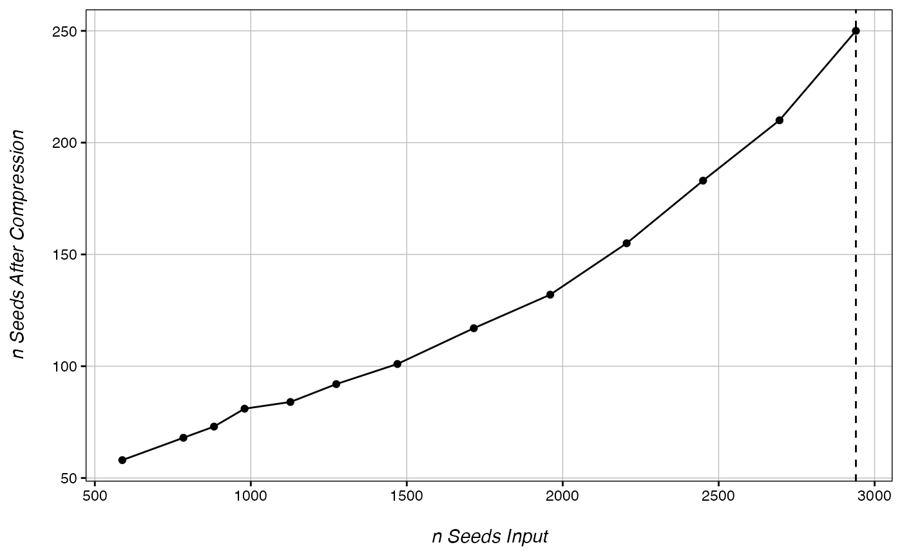
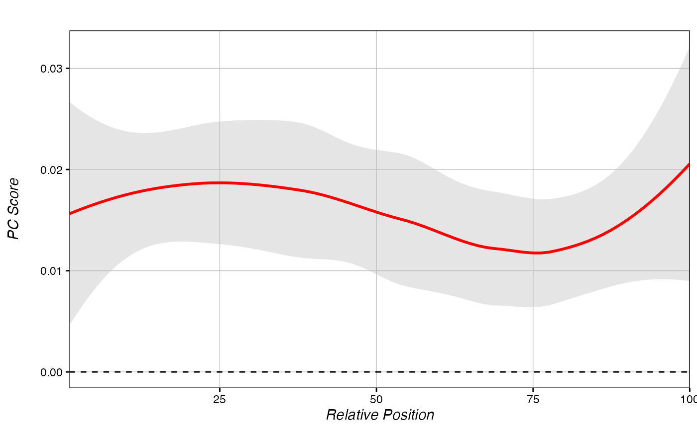
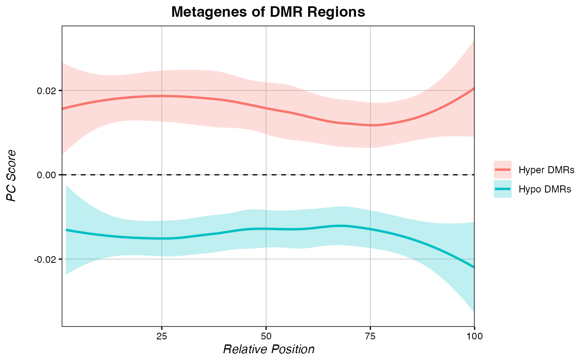

Differential Methylation with PCBS
Kathryn Lande
2024-02-29
Source:vignettes/Differential_Methylation.Rmd
Differential_Methylation.RmdEigenvector WGBS analysis is built on the simple premise that in a principal components analysis of all CpGs in a whole genome bisulfite seq (WGBS) experiment, the eigenvector values of each CpG in the principal component that best defines the treatment can be used as a quantitative score for comparative analysis. Simply put: if a principal component strongly delineates two conditions, then the contribution of a single CpG to that principal component will be larger if that CpG is highly different between conditions.
Eigenvector values are continuous, and allow for more flexible analyses than those predicated on a p-value cut-off system. In comparison to other common WGBS tools, Eigenvector analysis is generally faster. It shows comparable ability to call differentially methylated loci (DMLs) to current standard tools, and in test genomes it shows remarkably accurate differentially methylated region (DMR) calling both in terms of the number of DMRs called, as well as the size of DMRs called.
Currently, Eigenvector WGBS analysis is only set up to handle comparisons of two-condition, one-factor experiments.
Reading in our input file
We provide a script, Bismark2Matrix.R, that can be used to covert Bismark outputed .cov files into the below format.
eigen[1:5,1:5]
## cpgID trt1_PercMeth trt1_nCpG trt2_PercMeth trt2_nCpG
## 1 chr2:2505718 0.5581395 43 0.4084507 71
## 2 chr2:1807326 0.5652174 69 0.4883721 43
## 3 chr2:2490208 0.4489796 49 0.5416667 72
## 4 chr2:5512828 0.5263158 38 0.6315789 19
## 5 chr3:1296629 0.6000000 35 0.4242424 66Defining our best principal component
Here we identify which principal component (PC) best defines the difference between treatment and control. If multiple PCs delineate the conditions, the PC contributing the most variance will be chosen.
DefineBestPC(eigen, IDs = c("trt", "ctl")) # IDs segregate two conditions based on a common identifier in the column names of the eigen dataframe, rather than by column number. You may have to rename the columns of your input object if no common name exists.
##
## Best PC to use is PC1 with a sample distance of 45.4, representing 29.81% of the total variance.
Score each CpG by its eigenvector value
As PC1 was defined as our best PC, we should set PC=1 The first condition in the IDs=c() option will always be treated as the treatment. Positive eigenvector scores (PC_Score) mean that there is increased methylation in the treatment condition (hypermethylation), whereas negative eigenvector scores indicate decreased methylation in the treatment condition (hypomethylation).
getPCRanks(eigen, IDs = c("trt", "ctl"), PC = 1) -> ranks # Get an eigenvector score for each CpG based on principal component 1
head(ranks)
## PC_Score
## chr2:2505718 3.781088e-05
## chr2:1807326 4.573342e-04
## chr2:2490208 3.156102e-03
## chr2:5512828 -5.695585e-03
## chr3:1296629 2.822282e-03
## chr3:3212276 -6.044066e-03Identifying a DML cut-off
Eigenvector analysis does not assign p-values to individual CpGs. However, in test datasets, score-based cut-offs show comparable ability to define true DMLs as other tools that do assign p-values. We offer functionality to define a cut-off score for differential vs. non-differential DMLs, though note that this type of analysis is not the primary function of eigenvector analysis.
rankDist(ranks, mode="intersect") # Two modes "intersect" and "strict"
## Estimated rank cut-off for significant CpGs is 980.
Generally speaking, the best cut-off rank occurs just above the inflection point of the plot of Absolute Rank vs. Absolute Score. The cut-off can be estimated manually from the plot, or the rankDist() function can be used to estimate the cutoff as above. rankDist() offers two modes. The “intersect” method defines the cut-off as the intersection between the linear line of best fit for the highest scoring CpGs (true variation), and the that of the lowest scoring CpGs (background noise). Alternatively, the “strict” method defines the cut-off simply as half the distance between the maximum rank used to define the line of best fit for the highest scoring CpGs and the value produced by intersect mode.
In high variability test genomes, PC-strict and PC-intersect perform comparably to each other and other softwares. In low-variability test genomes, PC-strict greatly out preforms PC-intersct as well most other tested softwares in false positive reduction, though this comes at the cost of a slight increase in false negative calls. Generally, PC-Strict is better in comparisons where the expected number of true DMLs is relatively low.
Please note that these are simply estimations. If the predicted cut-off returned is much higher or much lower than the inflection point as demonstrated in the figure above, it is recommended to select a cut-off rank manually.
DMLs <- addRanks(ranks) # add rank order to our CpGs
DMLs$significant <- DMLs$abs.order <= 980 # significant CpG cut-off defined by rankDist() is: 980
head(DMLs)
## PC_Score order abs.order chr pos significant
## chr3:3291453 0.03364091 1 1 chr3 3291453 TRUE
## chr3:31670 0.03343012 2 2 chr3 31670 TRUE
## chr3:3082482 0.03337153 3 3 chr3 3082482 TRUE
## chr2:350483 -0.03296202 50000 4 chr2 350483 TRUE
## chr1:8652017 0.03291018 4 5 chr1 8652017 TRUE
## chr3:4531184 -0.03270712 49999 6 chr3 4531184 TRUEWe now have a file with a boolean "significance" for all CpGs. For users who wish to look at differential loci exclusively, we recommend using a package that calculates true p-values at the locus level, such as DSS.
Identifying a DML cut-off manually
In some cases, the cut-off predicted by getPCRanks may look imperfect. In such cases, cut-off values can be tested manually:
test_50 <- checkRank(ranks, 50) # set cut-off to 50
test_500 <- checkRank(ranks, 500) # set cut-off to 500
test_5000 <- checkRank(ranks, 5000) # set cut-off to 5000
gridExtra::grid.arrange(test_50+tilt(), test_500+tilt(), test_5000+tilt(), nrow=1)
Calling DMRs
Differentially methylated region (DMR) calling is where eigenvector analysis shines. In simulated genomes, the eigenvector-based DMR calling system has an extremely low false call rate compared to other tested softwares (false positive + false negative). Basepair for basepair, most other DMR callers dramatically over predict the size of DMR regions compared to the present method.
Our DMR calling algorithm works by defining a rank cut-off, wherein CpGs below this rank are extracted as seeds. Nearby CpGs are collapsed into single seed points at their median. The function expands outwards from each seed point up to a maximum DMR size, then identifies the smallest expansion containing over 90% of the most variable CpGs.
In general, the only downside to using a larger number of seeds is that the DMR calling will take more time. However, with smaller or more sparse genomes, you can run into a problem called “overcompression.” This occurs when seeds from multiple DMRs are collapsed into single points, causing the total number of DMRs to be underestimated. The function below can be used to check for overcompression.
Broadly, as long as you are not overcompressing, increasing the number of seeds will increase your true postive calls without increasing your false positive calls. A smaller seed number will find fewer significant DMRs, while a larger seed number will be able to identify a greater number of DMRs at the cost of computing time. In general, the number of significant DMR calls plateaus at a seed number ~1-3% of the total filtered CpGs. To read more about DMR seeds and overcompression, see our vignette on Optimizing DMR Calling.
DMR calling occurs in two steps:
CheckOvercompression(ranks, 980) # For larger genomes, the target seed number will usually be about 1-2% of the number of rows in the ranks file. But in this small test set, we are just testing values around the DML cut-off.
## ............. done!
chromDictObj <- chromDict(ranks) # Optional step to create a chromDict object, this step is computationally intensive and run internally in many functions, so it is recommended to generate it one time only. ––>
DMRs <- Get_Novel_DMRs(ranks, 2940, chromDictObj=chromDictObj, DMR_resolution=200, minCpGs=10) # No overcompression was detected, so we will just use the largest seed value.
## done!
head(DMRs[order(DMRs$FDR, decreasing = F),])
## Chr Start End DMR_Zscore nCpGs p DMR_size FDR
## 114 chr3 4920450 4923267 -39.63556 24 8.285957e-08 2817 2.982945e-06
## 97 chr3 4140014 4142951 -25.08817 25 1.142786e-07 2937 3.999750e-06
## 93 chr3 1340221 1342791 -26.34567 23 1.299903e-07 2570 4.419671e-06
## 57 chr1 8650728 8652017 63.96288 13 2.851795e-06 1289 9.410925e-05
## 125 chr3 3960576 3962805 14.61286 14 6.122748e-06 2229 1.959279e-04
## 78 chr3 5080015 5081519 -33.10397 10 1.848491e-05 1504 5.730322e-04Score pre-defined regions
Eigenvector scores allow users to directly quantify methylation differences across pre-defined regions such as TSSs, enhancers, or other regions of interest. We offer functionality to assess these regions directly, rather than by querying novel DMR calls for overlaps.
# Make a dataframe of regions to check:
regions <- data.frame(chr=c("chr3", "chr3", "chr1"),
s=c(4920450, 3961576, 301000),
e=c(4923267, 3963805, 303900),
ID=c("Hypo-DMR", "partial Hyper-DMR", "random"))
getRegionScores(chromDictObj=chromDictObj, regions=regions)
## feature meanPC nCpG Z p
## 1 Hypo-DMR -0.020963435 24 -5.2595086 9.074176e-08
## 2 partial Hyper-DMR 0.008092709 8 2.1387060 2.550247e-06
## 3 random -0.001061349 4 -0.3405263 3.103850e-01getRegionScores returns the mean eigenvector scores for each input region, as well as Z-score against the background, and a p-value. As you can see in our test set, true DMRs and regions partially overlapping true DMRs are significant, whereas random regions do not show enrichment. Of note, the Z-scores calculated by this function and those calculated by Get_Novel_DMRs() are not directly comparable, as getRegionScores() only samples the genomic background, but does not bootstrap it. In both the case of novel DMRs and known regions, Z-scores strongly correlate to the true mean percent methylation at a region, where larger Z-scores indicate a greater difference between treatment and control, and the sign of the Z-score indicates whether the difference is larger or smaller in the treatment. However, PCBS also offers functionality that allows users to investigate the percent methylation difference across regions. See our vignette on Manipulating Percent Methylation.
Metagenes
We also provide functionality for generating metagenes over a set of regions based on PC Scores. In these figures, values above 0 represent regions where the treatment group is hypermethylated, while values below 0 represent hypomethylated regions.
Make a metagene from the significant hypermethylated DMRs:
hyper_DMRs <- DMRs[DMRs$FDR <= 0.05 & DMRs$DMR_Zscore > 0,] # Select all significantly hypermethylated DMRs
regions_hyper <- hyper_DMRs[c(1:3)] # select chrom, start, and end of all hyper DMRs
score_metagene(ranks, chromDictObj=chromDictObj, regions_hyper)
Our hypermethylated DMR regions broadly show a highly positive PC-score across the regions. This is what we expect for hypermethylated regions.
Plot metagenes of multiple regions together
# Let's plot the metagene of the hyper-DMRs and hypo-DMRs together on the same plot..
hypo_DMRs <- DMRs[DMRs$FDR <= 0.05 & DMRs$DMR_Zscore < 0,] # Select all significantly hypermethylated DMRs
regions_hypo <- hypo_DMRs[c(1:3)] # select chrom, start, and end of all hyper DMRs
# Setting return.data = T will cause score_metagene to return raw data instead of a plot
hyper_metagene <- score_metagene(ranks, regions_hyper, chromDictObj=chromDictObj, return.data = T)
hypo_metagene <- score_metagene(ranks, regions_hypo, chromDictObj=chromDictObj, return.data = T)
# The multiple_metagenes function plots multiple metagenes using a list of raw data objects from score_metagene().
multiple_metagenes(data_list = list(hyper_metagene, hypo_metagene), # list of raw data
set_names = c("Hyper DMRs", "Hypo DMRs"), # names for elements of the data_list list
title="Metagenes of DMR Regions", legend.title = F)
As expected, our hypo-DMRs show very negative PC-score across the regions. To learn how to make metagenes using percent methylation difference instead of PC score, see our article on Manipulating Percent Methylation.